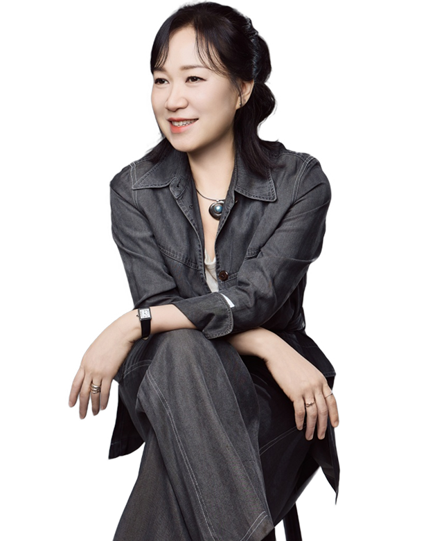

KIM MI JIN
김미진
교육이사약력
- 2003 아드레 에스테틱 오픈
- 유아교육 전공, 스포츠 재활 학사, 두골비·체 교육이사
- 대한 정골정체협회 정회원
- 중앙대, 연세대, 이화여대 해부학 실습 연수
- 보건복지부 자격증 K-TAESIL
- 한국여성둘라 전문가 협회
- (사)한국피부미용사회 중앙회 NCS과정 이수
- 부산광역시장배 심사위원 위촉
- 동아대 수기미용 성형관리사 자격취득
- 한중 스포츠트레이너 연맹 전문가 과정 이수
- 체형관리 지도자 척추균정술 자격취득
- 스포츠마사지 지도자 자격취득
- 다이어트 전문가 과정 이수
- 괄사 전문가 과정 이수
- 천궁 조형술 1기 수료
- 바른체형 관리사, BT마사지사 수료
- 정골정체요법 이수
- 아로마 DIY 힐링코치
- 전신후 전문가 과정 이수
- 보건복지부 자격증-K-TAESIL 둘라 전문가 (자연주의 출산 코치 과정)이수
- 쾌족테라피 전문가 과정 이수
- 캔달, 뉴만 수업 이수
- 한국미용사 미세케어 프로그램 이수
- (현) 두골비체 트레이닝 센터 교육이사
- (현) 두골비 오브제 랩 부산본점 센터장